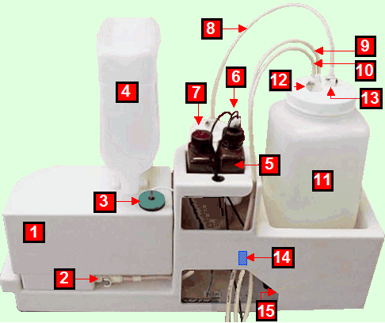
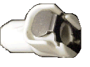
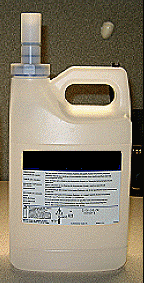
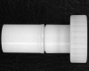
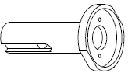
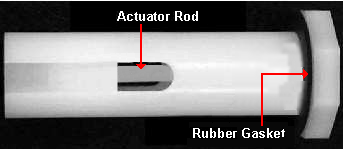
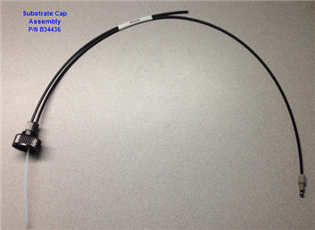
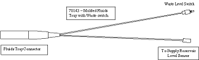
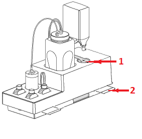
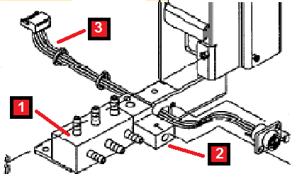

Fluidics Tray
Illustrated Parts List
This document contains parts for the Access 2 and Access 2 Enhanced Fluidics Tray Assembly and including:
- Consumables: Wash Buffer and Substrate bottles
- Bulk Supply Manifold
- Substrate Bulk Head Fitting
- Level Sensor Cable
- External Drain Kit and Tubing/Fitting
| Description | Order Number | Notes |
|---|---|---|
| Tray, Fluidics, Assy, Unibase | A51265 | Contains the tubing clamp for the wash buffer supply tubing. This tray assembly is complete with everything necessary to install and connect a new fluids tray assembly. This is the same assembly that is sent with new instruments for installations. Supplies such as Wash Buffer and Substrate are not included. |

| Item | Description | Order Number | Notes |
|---|---|---|---|
| 1 | ASSY, UNIBASE RESERVOIR | 84241 | Buffer Reservoir Assembly with male fitting only (no float sensor, wash buffer receptacle, or quick connect female fitting). |
| 2 | COUPLING-QUICK 1/8, HBARB, SHTO | 6338A |
Fitting, Fluids Tray to Cream Colored Supply Tubing, Quick Connect, Wash Buffer, For Both Types of Fluids Trays Installer needs white plastic sliding type sleeve / clamp to attach tubing to fitting. Order 84241 if male fitting is damaged.  |
| 3 | ASSY, BUFFER LEVEL SENSOR RoHS | 78013 | Sensor, Level, Buffer Supply Float, Unibase Tray (Gasket Included) RoHS
Replaced by C96804 at stockout. |
| ASSY, BUFFER LEVEL SENSOR RoHS | C96804 |
Sensor, Level, Buffer Supply Float, Unibase Tray (Gasket Included) RoHS Replaces 78013 at stockout. |
|
| 4 | Access2 Wash Buffer | A16792 |
Buffer, Wash (One case of 4 -1,950 ML Bottles)  |
| Not Labeled | NOZZLE / VALVE, MACHINED | A49183 |
Nozzle / Valve Assy, Buffer Bottle (installed onto Buffer Bottle) Part is threaded onto the buffer bottle and is inserted into the receptacle on the buffer tank.  |
| Not Labeled | Receptacle, Buffer Reservoir | B89503 | This receptacle is installed in the buffer reservoir. The nozzle on the buffer bottle is inserted into this part. Replaces A30258.
 Does not come with the rubber gasket. Order the rubber gasket part# 6220B if needed. This receptacle is installed in the buffer reservoir. The nozzle on the buffer bottle is inserted into this part.  |
| Not Labeled | Gasket, Reservoir, Wash Buffer Receptacle | 6220B | Installed on Buffer Reservoir Receptacle. |
| 5 | ACCESS SUBSTRATE 4 X 130ML | 81906 | Substrate, 4 bottles, 130ml/botle |
| 6 | ASSY, CAP, SUBSTRATE | B34435 |
Cap, Substrate, Assy, Unibase (Includes Tubings, CnS fittings, fitting lock, no Check Valve)  |
| Not shown | VALVE, CHECK, MINIATURE | 78192 |
Valve, Check, Substrate For non-enhanced instruments, the check valve is optional to be installed on the Substrate Cap Assembly. |
| 7 | ASSY,WASTE AIR FILTER BOTTLE | 80171 |
Filter, Waste, 6" High, Assy (Filter, Plastic Bottle & Fittings) This is the waste air filter. It was determined when this waste air filter was first implemented that there was a liability in allowing customers to remove the actual filter from the bottle and replace it. There is a sharp metal edge along the circumference of the filter in two places. For this reason, the only way the filter itself can be replaced is to replace the entire bottle, cap, filter and fittings. Customers should not attempt to replace only the filter. |
| Not Labeled | COUPLING-INSERT, QUICK, 1/8 HB | 6347A |
Fitting, Single Port, Waste Air Filter to Waste Bottle Attaches the tubing between the Waste Air Filter and the Waste Bottle. Quick connect. The tubing attaches to this part. Sleeve 8622B is required to secure the tubing to the fittings barb. |
| 8 | FST, TUB-TPR, 1/8 ID, I/16 WALL | 6875A |
Tubing, Cream, 1/8"ID x 1/4"OD, Fluidics Module and Fluids Trays Waste Bottle to Waste Air filter bottle is 15" long. Order the tubing by foot. |
| 9 | FST, TUB-TPR, 1/8 ID, I/16 WALL | 6875A |
Tubing, Cream, 1/8"ID x 1/4"OD, Fluidics Module and Fluids Trays Waste Bottle Waste fluid connection to instrument is 28" long. Order the tubing by foot. |
| 10 | FST, TUB-TPR, 1/8 ID, I/16 WALL | 6875A |
Tubing, Cream, 1/8"ID x 1/4"OD, Fluidics Module and Fluids Trays Waste Bottle Waste air connection to instrument is 28" long. Order the tubing by foot. |
| 11 | WASTE BOTTLE | 6769C |
Bottle, Plastic, Waste, With Lid & 2 Couplings This is the liquid waste bottle. |
| Not Labeled | COUPLING INSERT 1/8"ID | 6646A |
Fitting, 2 Port, Waste Air & Waste Fluids to Waste Bottle Attaches the instrument Waste Air & Waste Fluids lines to the Waste Bottle. Quick disconnect. The tubing attaches to this part. |
| 12 | COUPLING BODY 1/8" ID HOSEBA | 6342B | Fitting, Waste Bottle Lid, Dual Port, White (Attaches to Waste Bottle Lid) |
| 13 | COUPLING-BODY, QUICK, 1/8 HB | 6348B | Fitting, Waste Bottle Inlet, Single Port, White (Attaches to Waste Bottle Lid) |
| 14 | SLEEVE CLAMPS | 8622B |
Clamp, White, Tubing, (Holds Fluidics Tray Tubing to Bulkhead Fittings) (Cylindrical) Wash buffer tubing clamp (applied to inner surface) |
| 15 | HARNESS, FLUIDS TRAY RoHS | 78143 / B89504 |
Harness, Fluids Tray, Sensor, Wash/Waste Level, with Tray Switch, Unibase Tray RoHS  78143 part number is available until stock out. Once stock out, order B89504 |
| Not shown | WASTE SCALE CENTER | 78222 |
Tray, Waste Scale Center, Assembly, (Tray, Shaft & Screw) Spring and E-clip not included. |
| Not shown | FST, E-RING PLAIN O.D. .500 | 6833G |
Retainer, E-Clip, Wash Carousel Thrust Cap Spring & Waste Scale Tray Shaft (Unibase) This part is the E-clip that is used on the Wash Carousel Thrust Cap Spring, which is located on the Analytical module, and the Liquid Waste Scale Spring, which is located on the Fluidics Tray. |
| Not shown | SPRING, WASTE SCALE | 78233 | Spring, Metal, Waste Scale Center, Unibase Tray |
| Not shown | SWITCH BOOT | 77962 |
Boot, Black, Rubber, Waste Scale Switch, Unibase Tray Only The black rubber installed on the waste scale switch. |
| Not shown | FST, CLAMP, TUBING, .256-.323 | 7080B |
Clamp, Black, Tubing, Snap On (Secures Tubing to Bulkhead Connector) |

| Item | Description | Order Number | Notes |
|---|---|---|---|
| Not Labeled | Assembly, Fluidics Tray | C11906 | This tray assembly is complete with everything necessary to install and connect a new fluids tray assembly. This is the same assembly that is sent with new instruments for installations. |
| 1 | Receptacle, Buffer Reservoir | B89503 | This receptacle is installed in the buffer reservoir. The nozzle on the buffer bottle is inserted into this part. Replaces A30258.
Does not come with the rubber gasket. Order the rubber gasket part# 6220B if needed. This receptacle is installed in the buffer reservoir. The nozzle on the buffer bottle is inserted into this part. |
| Not Labeled | Gasket, Reservoir, Wash Buffer Receptacle | 6220B | Installed on Buffer Reservoir Receptacle. |
| Not Labeled | ASSY, CAP, SUBSTRATE | B34435 |
Cap, Substrate, Assy, Unibase (Includes Tubings, CnS fittings, fitting lock, no Check Valve) For enhanced instruments, also order 78192 VALVE, CHECK, MINIATURE. |
| Not shown | VALVE, CHECK, MINIATURE | 78192 |
Valve, Check, Substrate For enhanced instruments, the check valve is required to be installed on the Substrate Cap Assembly. |
| 2 | Clips, Fluidics Tray | B89502 | |
| Not Shown | Harness, Fluidics Tray | B89504 | Harness, Fluids Tray, Sensor, Wash/Waste Level, with Tray Switch RoHS.

|

| Item | Description | Order Number | Notes |
|---|---|---|---|
| 1 | MANIFOLD, BULK SUPPLY | 77593 |
Manifold, White Nylon, Bulkhead Fitting (Wash Buffer, Waste Air & Waste Fluid) Attach proper fittings to the Fluidics Tray tubing. |
| 2 | BULK HEAD FITTING SUBSTRATE | 84891 |
Bulkhead Fitting, Substrate, black plastic This is the black plastic bulkhead fitting that connects the substrate bottle tubing to the substrate pump tubing through the left side of the instrument. On very old Rev B instruments substrate was part of the bulk fluids manifold (4 ports). The newer bulk fluids manifold 77593 does not include a substrate fitting (3 ports). |
| 3 | CABLE, LEVEL SENSOR RoHS | 7986A |
Cable, Fluidics Interface PCB to Wash / Waste Level Sensor RoHS This cable is internal to the instrument and connects J20 on the Fluidics Interface PCB to the locking bulkhead connector going to the external unibase fluidics tray. |
| Item | Description | Order Number | Notes |
|---|---|---|---|
| 1 | Kit, A2 Waste Drain Installation | B41734 |
Replaces P/N A08895. The kit contains 7240A Qty. 2 (Barb-to-Barb Fitting), 7154A Qty. 1 (25-ft tubing). |
| 2 | FST,TUB1/8 ID 5/16 OD BRAIDED | 7154A | Tubing, Clear, Reinforced, Waste Drain Adaptor, External Waste (Order in 1 foot quantities) |
| 3 | FST, FIT, 1/8 BARB TO 1/8 BARB | 7240A | Fitting, Barb to Barb, 1/8" to 1/8", (Splices Fluids Tray [Original] to Tubing From Bulkhead Fittings, Also used to extend waste and pressure lines to sink or floor drain) |
Edit Log
- 07/15/2016 THX - New format release.
- 11/27/2019 THX - Removed obsolete parts.
- 1/31/2023 THX - Added notes to B34435 and 78192.
- 4/9/2024 DJP - Added notes to 84241 and 6338A.
- 2/21/2025 DJP - Updated notes for B41734.
- 8/12/2025 DJP - Added C96804.
- 8/28/2025 DJP - Use "Order Number" heading.